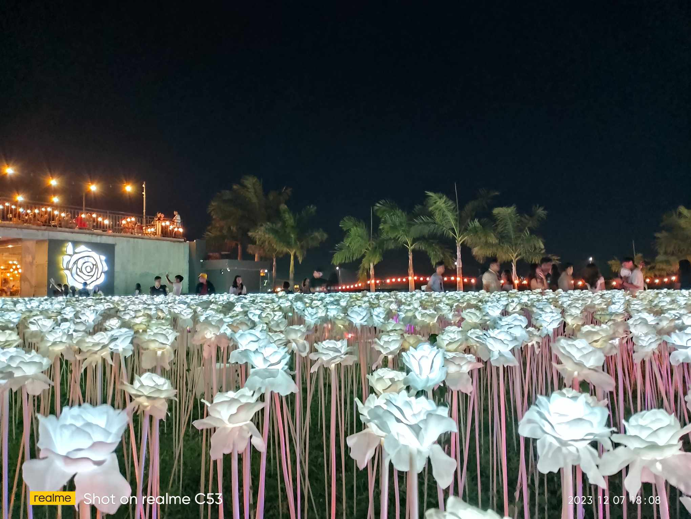
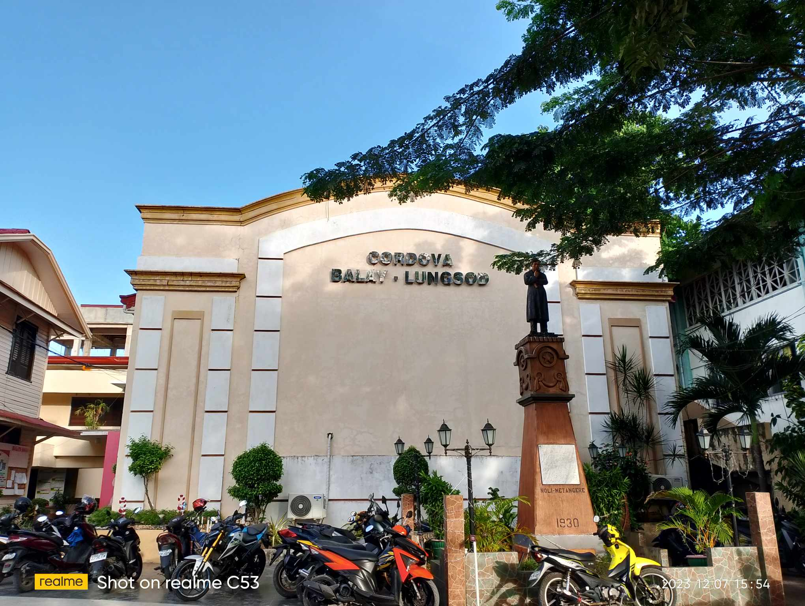
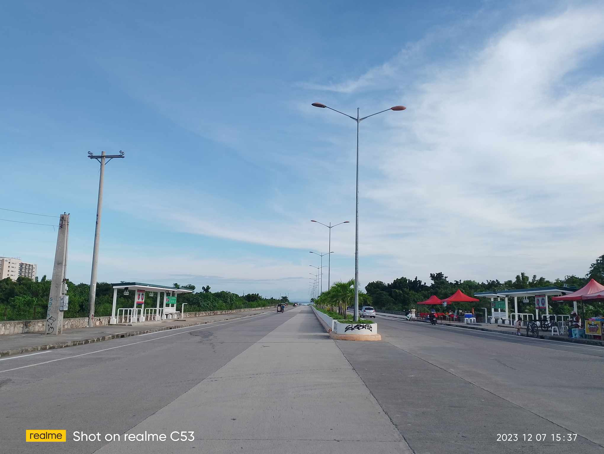

Cordova Tourism
Getting to Cordova Municipality You can take a taxi or jeepney (needs transfers) from Cebu City. However, if you are already on Mactan Island, hopping on a cab is faster and hassle free.
Cordova is a quiet fisherman town off the coast of mainland Cebu. It has several hotels, resorts and accommodations, which include:
10,000 Roses
Lantaw
Parola
Bakasihan Resto

Cordova History
(Municipality of Cordova) in bisaya lungsod sa Cordova
Cordova became a municipality in 1864, and from 1913 up to the present, a total of 15 mayors governed the district.
The name ‘Cordova' (or Cordova) has origins as names of cities in Argentina and Spain. Certainly, it is a non-local name or word.
Cordova Municipality is located close to the famous Mactan Island in Cebu Province, Visayas Region, the Philippines.
It is considered a third municipal income class municipality of Cebu Province.
Cordova Church
Cordova Police Station
Cordova Plaza
Cordova Municipality

Cordova Environment
Cordova has A special attraction which is the mangrove forest and swamp area the cleanliness and the oceans
The enhance environmental quality of public spaces, improve air quality, reduce stormwater runoff, and contribute to climate resilience
Cordova has a very clean and nice environment which include the:
RORO
Cclex